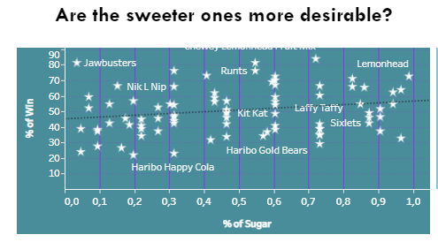

Halloween candy - Marketing Research Data Analysis
OVERVIEW
The analysis aims to identify trends in consumer preferences for various sweets. It is based on survey data collected during Halloween, with responses from 8,371 individuals regarding 82 items of candy.
PROCESSING
The analysis was conducted using the integrated tools of the Tableau platform, involving the creation of customized calculated fields, data aggregation methods, and ranking of various parameters. The visualizations created demonstrate the findings of the calculations and facilitate the derivation of necessary conclusions based on the specified parameters.
INSIGHTS
The example of insight:
The graph highlights tre price impacting the popularity of various candy brands from different
manufacturers.
The example of analysis:The graph reveals the impact of sugar content on the popularity of various candy brands from different manufacturers.
MILESTONES
Milestones by monitoring
1. The data indicates that the clear winner is the Shewey Lemonhead Fruit Mix, with 84% of the votes. The trend of preferring higher-priced sweets only applies to the TOP-price segment; among items in the mid and low-price categories, price is not the determining factor.
2. Similarly, sugar content is not a decisive factor in understanding the popularity of candy. Regardless of the percentage of sugar content, there are corresponding popular choices.
3. However, the data does show that sugar contents of 0.3%, 0.45%, 0.6%, and 0.72% correspond to over half of the sales leaders.
4. The absolute leaders among manufacturers are Trolli Ave, Welch, and Werther's.
COMPLETE DATA ANALYSIS
Please, see final report in Github and Tableau for more information